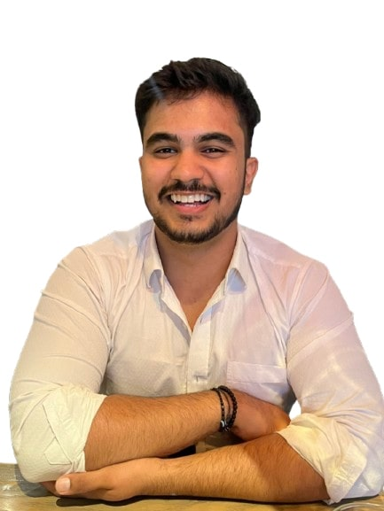
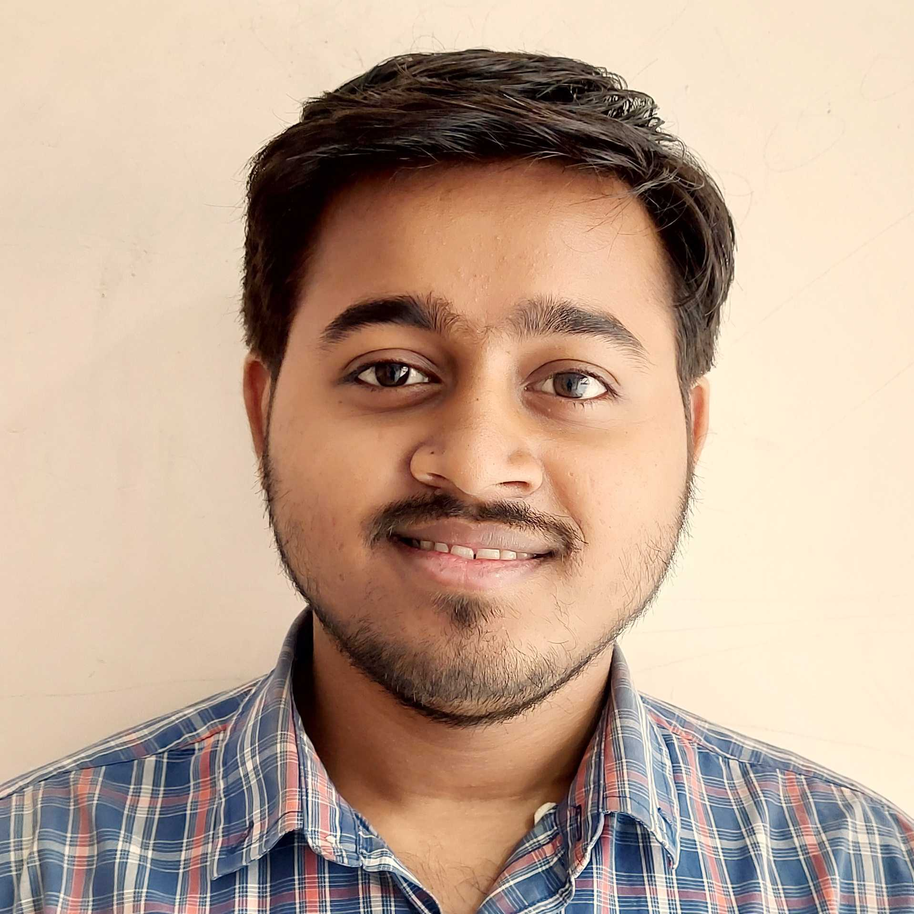
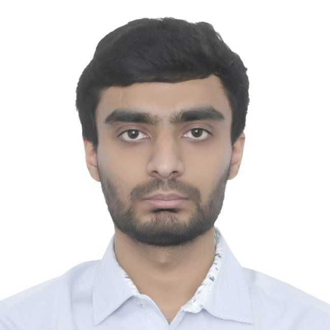

Three MTech scholars selected for national AI research excellence
Sustainability Lab • IIT Gandhinagar

VayuDrishti
LLM-Powered Insight into India's Air Quality

AI Climate Emulators
Real-Time Air Quality & Climate Decision Support

SwasthaNidra
EdgeAI for Sleep Health in Resource-Limited Settings
Research at the intersection of machine learning and sustainability